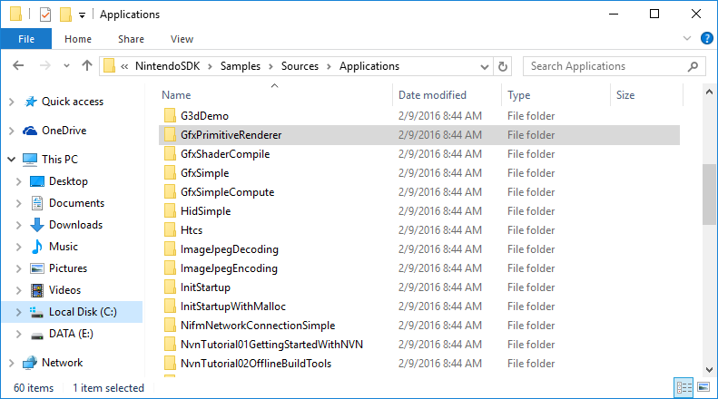
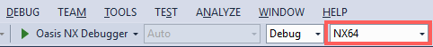
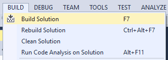
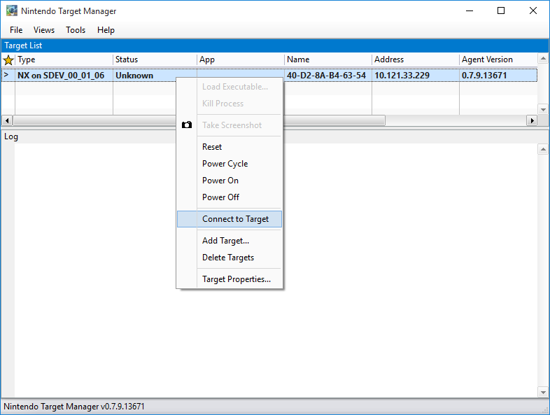
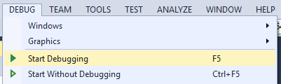

Overview
The steps to build and run libraries and applications for NintendoSDK are the same as for normal Visual C++ projects.
The NintendoSDK provides a sample application that demonstrates the build and run methods.
Position of Sample Programs
Sample programs are in the NintendoSDK Samples package.
When the NintendoSDK Samples package is installed, the sample programs are placed in NintendoSDK\Samples\Sources\Applications.

Building NX Applications
The following description of the build procedure for a sample program uses the GfxPrimitiveRenderer sample as an example.
| Procedure | Operation |
|---|---|
| 1 |
Open Info
The preceding procedure assumes the use of Visual Studio 2015. If you are using Visual Studio 2013, open the file |
| 2 |
From the Visual Studio Solution Platform, select NX64.  |
| 3 |
Select Build > Build Solution.  |
Running NX Applications
The following description of the execution procedure for a sample program uses the GfxPrimitiveRenderer sample as an example.
| Procedure | Operation |
|---|---|
| 1 | Build a sample program following the procedure in the previous section. |
| 2 |
Verify that NX64 is selected in the Visual Studio Solution Platform.
|
| 3 | From the Start menu, start Target Manager. |
| 4 |
Add the development hardware to Target Manager. To add your development hardware, in the shortcut menu, select Add Target. |
| 5 |
Right-click, and in the shortcut menu, select Connect to Target. Confirm that the status indicates an active connection.  |
| 6 |
In Visual Studio, select Debug > Start Debugging or Debug > Start without Debugging.  |
| 7 |
After executing the sample, the following image will be displayed on the SDEV LCD screen.
|

Note: Target Manager
Target Manager is software that manages the SDEV unit connected to a PC.
You can use it to register development hardware to a PC and run built-in NX applications on SDEV units.
In the future, it will be possible to manage multiple SDEV units from one Target Manager.
Target Manager will be able to manage devices in the emulation environment on Windows just like it can for development hardware.
Target Manager starts automatically when running applications from Visual Studio on the SDEV/EDEV.
If you are operating the SDEV/EDEV without using Visual Studio, from the Start Menu, start Target Manager.
For more information about the features of the Target Manager, see the Target Manager section of Features > Development Hardware Control.
Next Steps
For the next steps, see the Tutorial chapter in the NintendoSDK documentation.
You can learn about creating NX applications by reading and following the tutorial.
CONFIDENTIAL